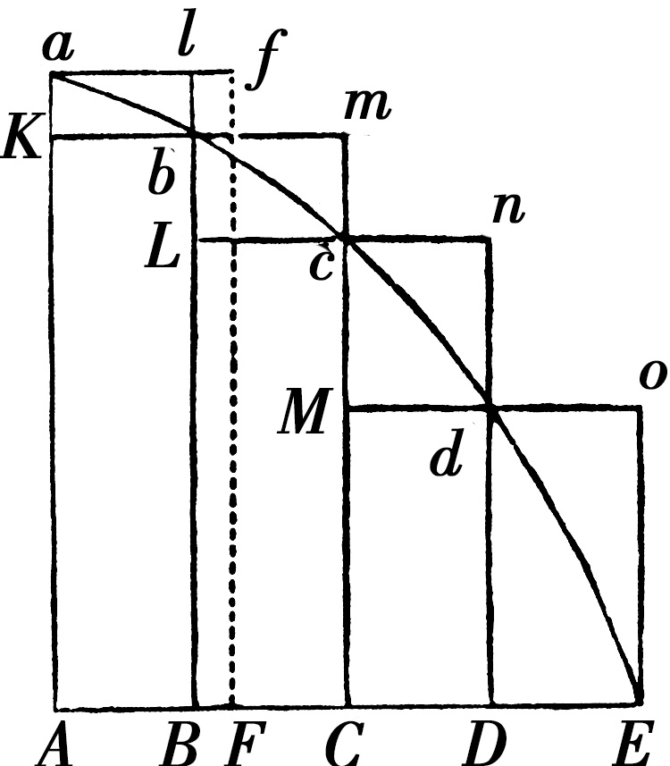

伽利略在1642年1月8日去世，恰好是我出生前的300年．这一年的圣诞节，在英国林肯郡的产业小镇乌尔索普，伊萨克·牛顿诞生了．后来，他成为剑桥大学卢卡斯数学讲座教授，这一职位现在由我担任．
牛顿的母亲没有指望他能活多长时间，因为他早产太多，日后他描述自己在出生时是如此之小，以至可以放入容量为1夸脱的罐子里．牛顿的身为自耕农的父亲也叫伊萨克，在3个月前去世了，当牛顿到2岁时，他的母亲汉娜·艾斯库再次结婚，嫁给北威特姆的一个富裕牧师巴纳巴斯·史密斯．显然，在史密斯的这个新家里没有年幼的牛顿的位置，而他被托付给他的外祖母玛杰丽·艾斯库照看．被遗弃的遭遇和从来未见过父亲的悲剧合在一起，困扰了牛顿的一生．牛顿鄙视他的继父，在1662年的记事中，他回忆道：“（我）以烧毁他们的房子来威胁我的父亲和母亲史密斯．”
与牛顿的成年颇为类似，他的儿童时代也间歇地存在着粗暴、存心报复的攻击，不仅攻击他所认为的敌人，也攻击朋友和家庭．他在早期还表现出将来决定他的成就的好奇心，即对机械模型和建筑绘图感兴趣．牛顿花费不计其数的时间制作钟表、发光的风筝，日晷和微型磨坊（由老鼠驱动），还精心绘制动物和船的草图．在5岁时，他到斯基灵顿和斯托克上学，但被认为是最差的学生之一，他的老师的评语说他“不上心”且“懒散”．尽管他有强烈的求知欲并显示出对学问的激情，但他却不能将其投入到学校的功课上．
牛顿到10岁时，巴纳巴斯·史密斯去世，汉娜从史密斯的遗产中得到了可观的收入．伊萨克和外祖母开始与汉娜，一个同母的弟弟及两个同母的妹妹一起生活．因为他对学校的功课，包括数学学习，不感兴趣，汉娜认为伊萨克管理农场和庄园更好，就让他从格兰瑟姆的文法学校退学．可她不走运，因为牛顿对管理家族庄园比对学校的功课更不感兴趣而且更不在行．汉娜的兄弟威廉是牧师，他认为对于这个家庭，让心不在焉的伊萨克返回学校完成他的教育可能是最佳选择．
这次，牛顿住在格兰瑟姆的文法学校校长约翰·斯托克斯家里，而且在受教育上他似乎到了一个转折点．一个故事说转折是他的头被校园里一个恃强凌弱的学生打了一下，激发了他，使年轻的牛顿逆转了他在学业上的不利前景．显示了智力上的特殊才能和求知欲，牛顿开始为在大学继续学习做准备．他打算进剑桥大学三一学院，这是他舅舅威廉的母校．
在三一学院，牛顿成为减费生，通过侍候教职员进餐及打扫房间获得补助．但到了1664年，他被选为公费生，这一身份为他提供了资金保障而且免予服侍别人．当剑桥大学由于鼠疫在1665年关闭时，牛顿回到林肯郡．在鼠疫期间，他在家中度过18个月，潜心研究力学和数学，并且开始集中精力考虑光学和重力．这一“奇迹年”，正如牛顿的叫法，是他生命中最多产且最富有成果的时期之一．在这前后，根据传说，一个苹果落在牛顿的头上，把在树下打盹的他惊醒，并刺激他制定引力定律．无论这个传说多么靠不住，牛顿本人写到一个“偶然“下落的苹果使他陷入对重力的沉思默想，据信那时他在做摆的实验．牛顿后来回忆道：“我正处在发现力最盛的时期，而且对数学和哲学的关心比其他任何时候都多．”
当牛顿返回剑桥，他学习亚里士多德和笛卡儿的哲学以及托马斯·霍布斯和罗伯特·玻意耳的科学．他被哥白尼和伽利略的天文学以及开普勒的光学所吸引．对牛顿在剑桥大学注册之前的数学教育，我们没有什么直接信息．在剑桥大学，牛顿的第一个导师是本杰明·普利恩，他后来成为皇家钦定希腊文讲座教授．不久，牛顿得到了伊萨克·巴罗的指导，巴罗是杰出的数学家，而且是皇家学会的创始人之一．他指导年轻的牛顿学习欧几里得的《几何》．此后，牛顿很快掌握了威廉·奥特雷德（1574-1660）和弗朗索瓦·韦达（1540-1603）的代数学著作，尤为重要的是，他掌握了笛卡儿的《几何学》．
在这段时间，牛顿开始了他的光折射和色散实验，实验可能在三一学院他的房间，或者在乌尔索普的家中进行．剑桥大学的一项进展显然对牛顿的前途有深刻的影响，这就是伊萨克·巴罗的到来，他被任命为卢卡斯数学讲座教授．巴罗认出了牛顿卓越的数学天赋，当他1669年辞去这一教职去研究神学时，他推荐27岁的牛顿继任他的职位．
作为卢卡斯讲座教授，牛顿最初的研究集中在光学领域．他打算证明白光是由不同类型的光复合而成，当白光被棱镜折射时，每种类型的光产生光谱中的一种不同的颜色．他的一系列精致而又准确的实验，目的是证明光是由极小的微粒构成的，引起了诸如胡克这样的科学家的怒火，胡克满足于光以波的形式传播．胡克要求牛顿为他的离经叛道的光学理论提供进一步的证明．牛顿的反应方式并没有随着他的成年而有所长进．他退缩了，并寻找一切机会羞辱胡克，拒绝出版他的《光学》一书，直到1703年胡克去世．
在牛顿担任卢卡斯讲座教授的早期，尽管他独自研究纯数学，但与少数同事分享他的成果．到1666年，牛顿已经发现了求解曲率问题的一般方法—他称之为“流数和逆流数理论”．这一发现引起与德国数学家和哲学家戈特弗里德·威廉·莱布尼茨的支持者的长期不和，莱布尼茨在十多年之后发表了他在微积分方面的发现．两人大致得到了相同的数学原理，但莱布尼茨先于牛顿发表他的工作．牛顿的支持者声称莱布尼茨多年前看过这位卢卡斯讲座教授的论文，两个阵营之间的激烈争论直到莱布尼茨在1716年去世才停止，并以微积分发明权的争论而著称．牛顿在谈论对上帝和宇宙的看法时发泄出来的恶意攻击，以及对剽窃的指控，使莱布尼茨陷于穷困和耻辱．
大多数科学史家认为这两个人事实上是独立地得到他们的思想，而且这一争论是无意义的．牛顿对莱布尼茨的辛辣的攻击在体力和精神上也重创了牛顿．不久，他发现他自己又陷入另一场战争，这次的对手是英国的耶稣会士，而且在1678年他遭受了一次严重的精神崩溃[1]．次年，他的母亲去世，牛顿离群索居．他秘密地钻研炼金术，这一领域在牛顿的时代被广泛认为是无成果的．这位科学家生涯中的这一插曲令许多牛顿的研究者感到为难．只是在牛顿去世后很久才弄清楚，他在化学实验上的兴趣与他后来研究天体力学和重力有关．
到1666年，牛顿已经开始形成他关于运动的理论，但他尚不能恰当地解释圆周运动的力学．大约50年前，德国数学家和天文学家约翰内斯·开普勒提出行星运动的三个定律，它们精确地描述了行星怎样围绕太阳运动，但他不能解释行星为何这样运动．开普勒所理解的与此相关的最接近的力是太阳和行星的“磁力”．
牛顿想发现行星的椭圆轨道的成因．通过应用他自己的向心力定律于开普勒行星运动的第三定律（和谐定律），他导出平方反比定律：任意两个物体间的重力与物体的中心之间的距离的平方成反比．由此，牛顿认识到重力是普遍的—引起苹果落地和月球围绕地球运行的力是同一种力．于是，他打算用已知的数据检验平方反比关系．他接受伽利略的估计—月球离地球的距离是地球半径的60倍，但他自己对地球直径不准确的估计值使他无法完成令他满意的检验．有讽刺意味的是，在1679年与他的老对手胡克的通信中重新激起了他对这一问题的兴趣．这次，他的注意力转向开普勒第二定律—等面积定律，由于向心力，牛顿能证明该定律为真．胡克也尝试解释行星的轨道，他关于这一问题的几封信对牛顿有特别的意义．
在1684年的一次著名的聚会上，皇家学会的3位成员—罗伯特·胡克，埃德蒙·哈雷和设计圣保罗大教堂的著名建筑师克里斯托弗·雷恩—对平方反比关系支配行星的运动进行了热烈的讨论．在17世纪70年代早期，在伦敦和其他学术中心的咖啡馆讨论的一个问题是从太阳向各个方向发出的重力按照距离的平方的反比减小，因此随着以太阳为中心的球的扩张，在该球的表面上的重力变得越来越小．1684年的聚会导致了《原理》的诞生．胡克宣称他从开普勒的椭圆定律导出重力是发散力的证明，但在他准备好公开之前，不向哈雷和雷恩透露．愤怒的哈雷去剑桥告诉牛顿胡克的说法，并提出如下问题：“如果行星被拉向太阳的力与距离的平方成反比，行星的轨道为何种形状？”牛顿的回答令人惊愕．他立刻答道：“轨道是椭圆．”并告诉哈雷，他在4年之前已解决了这一问题，但不知把证明放在书房的何处．
应哈雷的请求，牛顿用3个月的时间重构并改进证明．之后，他的能量喷涌了18个月，其间他如此集中于工作，以致往往忘记吃饭．牛顿进一步发展这些想法，直到它们占满三卷的篇幅．他为这一著作取名《自然哲学的数学原理》（Philosophiae naturalis principia mathematica），有意与笛卡儿的《哲学原理》（Principia Philosophiae）形成对照．牛顿的3卷《原理》提供了开普勒的定律和物理世界之间的联系．对牛顿的发现哈雷的反应是“高兴和惊奇”．哈雷看来，在所有其他人失败的地方这位卢卡斯讲座教授取得了成功，他个人资助出版这一大部头著作作为杰作和对人类的礼物．
伽利略已经证明物体被拉向地球的中心，牛顿证明同一力—重力，作用于行星的轨道．牛顿也熟悉伽利略在抛射体运动方面的工作，他断言月球围绕地球的轨道属于同一原理．牛顿表明重力可解释和预测月球的运动以及地球上的潮涨潮落．《原理》的第一卷包含牛顿的运动三定律：
1.每一个物体都保持它自身的静止的或者一直向前均匀地运动的状态，除非由外加的力迫使它改变它自身的状态．
2.运动的改变与外加的引起运动的力成比例，并且发生在沿着那个力被施加的直线上．
3.对每个作用存在总是相反的且相等的反作用；或者，两个物体彼此的相互作用总是相等的，并且指向对方．
对于牛顿而言，第二卷的开始是对第一卷事后的思考，并不包含在该书的原始规划中．它本质上是流体力学的专题论述，并让牛顿有地方展示他在数学上的独创性．在该卷的末尾，牛顿得出结论：经过详细研究，笛卡儿解释行星运动的涡漩理论不成立，因为行星可以在没有涡漩的自由空间中运动．为何如此，牛顿写道：“可由第一卷理解；且我将更充分地在下一卷中论述．”
在标题为《论宇宙的系统》的第三卷中，通过应用第一卷的运动定律于物理世界，牛顿总结道：“向着所有物体存在重力，重力与在每个物体中的物质的量成比例．”由此，他表明他的万有引力定律能解释已知的6颗行星以及月球、彗星，二分点和潮汐的运动．这一定律说明，所有物质以正比于它们的质量的乘积且反比于它们之间的距离的平方的力相互吸引．通过单独的一组定律，牛顿统一了地球和天空中所有可见的东西．在第三卷“推理的规则”的前两个中，牛顿写道：
实际上是规则二把天和地统一起来．亚里士多德主义者会断言天空的运动和地球上的运动的自然效果显然不同，因此不能使用牛顿的规则二．但牛顿另有看法．《原理》在1687年的出版受到了适度的赞扬，且第一版仅印了约500册．不过，牛顿的难以对付的敌手罗伯特·胡克威胁要损坏牛顿可能享有的任何荣誉．在第二卷出现后，胡克公开宣称他在1679年写的信提供的科学想法对牛顿的发现是至关重要的．他的说法，尽管不是没有依据，但牛顿很厌烦，他决定推迟甚至放弃第三卷的出版．最终，牛顿消了气而出版了《原理》的最后一卷，但出版前删去了其中提到的胡克的名字．
在牛顿自17世纪60年代中期开始使用的笔记本中，可以找到他在微积分方面的工作．不过，牛顿本人从未发表过一篇纯数学的文章[2]．只是到了20世纪后半叶，才出版了他的数学论文的大部分．在《原理》第一卷的第一部分，牛顿让他的同时代人看了一眼他在微积分上的发现．他把这一部分取名为“论用于此后证明的最初比和最终比方法”．在包含于本书里这一部分中牛顿提出了12个“引理”，引理是代表“辅助性命题”的希腊术语．这12个关于最初比和最终比的引理使他能够把由曲线构成的图形与其对应的由直线构成的图形互换使用．
在第一个引理中，牛顿证明了：诸量以及量的比，它们在任何有限的时间总趋于相等，在时间结束之前它们彼此之间比任意给定的差更接近，最终它们成为相等．
牛顿以非常直接的方式对此加以证明，此证预示了两个世纪后魏尔斯特拉斯的ε-δ方法．如果量及量的比最终不成为相等，那么，它们有有限的最终差D，且它们就不能比给定的差D更为接近！注意牛顿建立的这一陈述是在时间的变化之上．《原理》是论述物理学的一部著作，其中给出这样的背景不值得惊奇．
在牛顿之前2000年，对特殊的几何对象，通过其内接和外接多边形，阿基米德已经证明了它们的定理．在引理2中，牛顿采用阿基米德的思路，通过围绕曲线部分的内接和外接矩形把这一方法推广到任意曲线，证明由这些内接和外接矩形构成的内接和外接图形的面积有等量的最终比．
牛顿让他的读者考虑与这里由AE表示的一条直线有关的任意一段曲线，他把AE分成相等的部分AB、BC、CD，等等，它们将减小以至无穷（ad infinitum）.接着，他构作矩形，诸如内接于一段曲线的AKbB和外接于同一段曲线的AalB.他注意到这两个矩形的面积之差是矩形aKbl的面积，而且，这些“差”矩形的面积之和就是矩形AalB的面积！然后，牛顿注意到矩形AalB的底AB的长度减小以至无穷，因此矩形AalB的面积“变得小于任何给定的空间”．所以，内接和外接图形的面积最后“成为彼此最终相等”，而且曲线图形的面积也是如此！
牛顿马上把他的这些引理用于证明《原理》中的第一个命题：开普勒的面积定律！
在第一部分结尾的解释中，牛顿关心不久将会出现的批评：自身减小到零的量不能有最终比，因为它们减小到零．他通过把最终比与在空间中的一个物体在一个特定点的速度比较而做出回应．在源于古希腊人的一项论证中，牛顿指出该物体的确没有静止，因为在这一时刻它在特定的位置．与此形成对照的是，它有确定的最终速度，因为在这一时刻它在特定的位置，正如减小到零的量比其他减小到零的量可以有最终比．

因为那些最终比，随着它们量的消失，实际上不是最终量的比，而是无限减小的量的比持续靠近的极限，它们能比任意给定的差更加接近，但在量被减小以至无穷之前它们既不能超过，也不能达到［此极限］．
18世纪，牛顿开始担任政府职位—皇家造币厂厂长，在这里他利用他在炼金术方面的工作确定重建统一的英国货币的方法．作为皇家学会会长，他继续与他察觉到的敌人战斗，毫不宽容．尤其是他与莱布尼茨长期不和，因为他们竞相声称发明了微积分．1705年，他被女王安妮封为爵士，并活到看见出版《原理》的第二和第三版．
在一些场合，牛顿声言《原理》中的许多命题是他用他在微积分上的发现导出的．其中之一是他在1715年前后起草的《原理》的序言，但未出版．1722年，该序被纳入一本书的评论中匿名发表，这本书是评定他和莱布尼茨对微积分的发明权的主张的[3]．他写道：
近来对牛顿笔记本的分析揭示出，他并没有为了自己而非头号对手莱布尼茨获得微积分的发明权而做出过分的要求．
1727年3月，在患肺炎和痛风之后，伊萨克·牛顿逝世．如牛顿所愿，在科学领域，他没有对手．此人显然与女性没有浪漫之事（有些科学史家推测他与其他男人的关系，如瑞士自然哲学家尼古拉斯·法蒂奥·德·杜伊里尔），不过，不能说他对工作缺乏激情．与牛顿同时代的诗人亚历山大·波普，最优雅地描述了这位伟大的思想家对人类的馈赠：
所有不重要的争议和不可否认的傲慢在他的生活中留有印记，在晚年，伊萨克·牛顿深刻地评价他的成就：“我不知道世人怎么看我，但我觉得自己只是在海边玩耍的小孩，不时为找到一块更光滑的鹅卵石或一片更漂亮的贝壳自娱，而我面前是一片全然未被探究过的真理的大海．”
[1]牛顿与英国耶稣会士的争论发生在微积分发明权之争的前面．
[2]牛顿在《光学》英文第一版（1704）的附录中发表了两篇数学论文．
[3]这篇匿名评论以《题为〈通信集〉的书的说明》（Account of the Book entituled Commercium Epistolicum）发表在1715年的《哲学汇刊》（No.342，173-224页）上．下面引用的一段话出现在第206页．